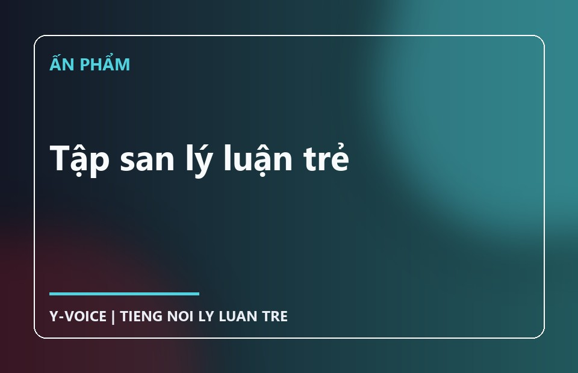
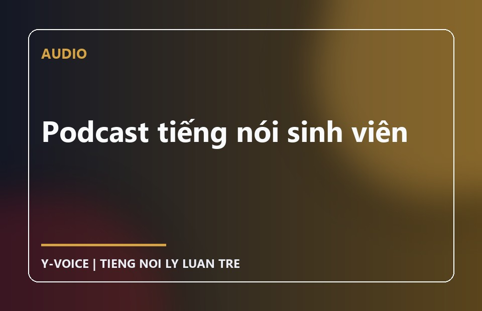
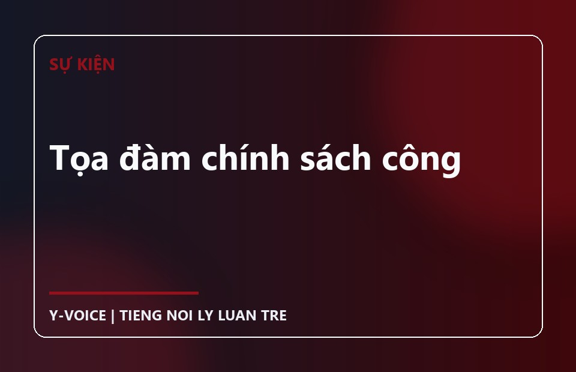
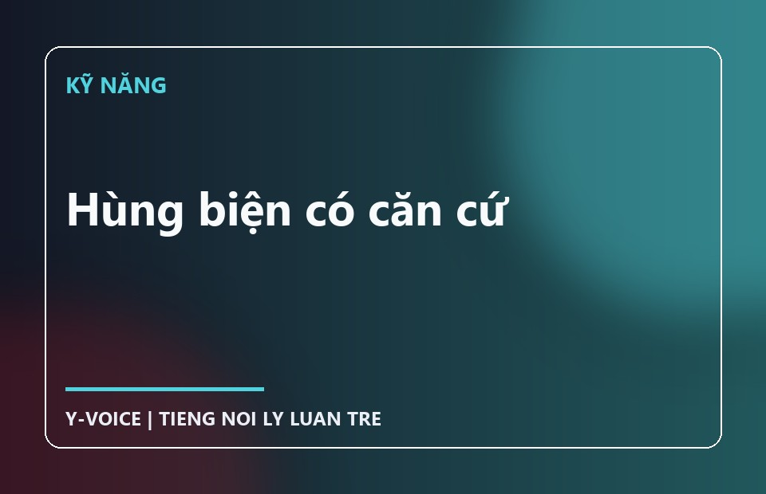

Phân tích vấn đề xã hội
Tiếp cận chính sách công, pháp luật, truyền thông và đời sống đương đại.
Insight Youth Voice Club
Tiếng nói lý luận trẻ
Không phải mọi tiếng nói đều có giá trị như nhau. Sự khác biệt nằm ở cách chúng ta suy nghĩ trước khi lên tiếng.
Điểm khởi đầu
Y-VOICE giúp sinh viên xây dựng quan điểm có căn cứ, diễn đạt có trách nhiệm và tham gia vào đời sống xã hội bằng tư duy học thuật.
Chúng mình là ai?
Insight Youth Voice Club là câu lạc bộ học thuật dành cho sinh viên, nơi việc “nói” không dừng lại ở ý kiến mà bắt đầu từ tư duy logic, tri thức, phân tích và lập luận.
CLB không tạo ra tiếng nói thay bạn. Chúng mình giúp bạn xây dựng tiếng nói của chính mình, một cách có trọng lượng.
Định hướng
Tiếp cận chính sách công, pháp luật, truyền thông và đời sống đương đại.
Nhìn vào vấn đề ít được quan tâm bằng cách tiếp cận khoa học, đa chiều.
Chuyển hóa tri thức thành tập san, podcast, tọa đàm và nội dung cộng đồng.
Sứ mệnh
Diễn đạt có căn cứ và tham gia vào đời sống xã hội bằng tri thức cùng trách nhiệm.
Tầm nhìn
Xa hơn là nơi quy tụ những người cùng quan tâm đến sản phẩm có giá trị lý luận và xã hội.
Con người Y-VOICE
Thông tin đang được cập nhật.
Thông tin đang được cập nhật.
Chúng mình được tạo nên để làm gì?
Tiếp cận khoa học xã hội, pháp luật, kinh tế, truyền thông. Rèn luyện tư duy phản biện, tư duy lý luận và thói quen nghiên cứu bài bản.
Biết viết, biết nói, biết trình bày, biết đưa ra quan điểm có căn cứ và chịu trách nhiệm với điều mình nói.
Thảo luận vấn đề xã hội dưới góc nhìn khoa học, trung lập, có định hướng; tôn trọng đa dạng quan điểm và tránh cực đoan cảm tính.
Giá trị cốt lõi
Bảng tin Y-VOICE

Một góc nhìn nhập môn về cách sinh viên có thể xây dựng lập luận trước khi phát biểu quan điểm.
Nội dung giới thiệu • Chưa có bản đọc công khai.

Chuỗi trao đổi ngắn về lập luận, dẫn chứng và trách nhiệm khi lên tiếng.

Không gian thảo luận trung lập, có định hướng, mở rộng kết nối chuyên gia.

Rèn kỹ năng trình bày, phản biện và chịu trách nhiệm với điều mình nói.
Đây là điểm bắt đầu
Y-VOICE đang chờ bạn.